Electronics Workbench
Исследование сигналов с помощью осциллографа в программе Electronics Workbench
1. Исследование параметров синусоидального сигнала
- Запустите программу Electronics Workbench.
- Разместите на рабочем поле функциональный генератор и осциллограф из панели контрольно-измерительных приборов (Instruments).
- Соедините генератор и осциллограф как показано на рис. 1.

Рис. 1 - Соединение генератора и осциллографа
- Сделайте двойной щелчок для вызова увеличенных изображений генератора и осциллографа (рис. 2)
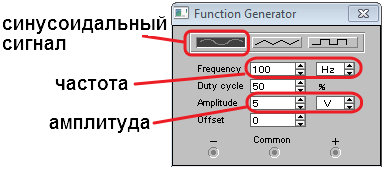
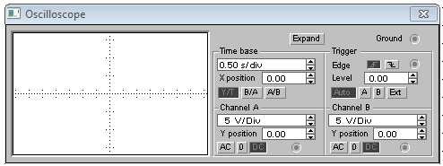
Рис. 2 - Увеличенные изображения генератора и осциллографа
- Установите на генераторе частоту 100 Гц (Frequency 100 Hz) и амплитуду 5 В (Amplitude 5 V) синусоидального сигнала (рис. 2).
- Включите схему на 2-3 секунды, щелкнув на кнопке Activate simulation.
- Выключите схему.
- Щелкните на кнопке EXPAND на простой модели осциллографа, чтобы открыть расширенную модель осциллографа (рис. 3).
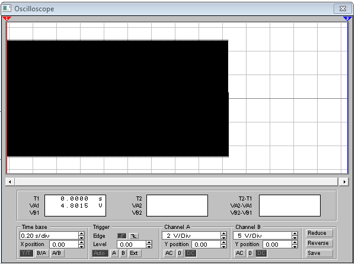
Рис. 3 - Расширенная модель осциллографа
- Установите шаг развертки 2 мс/дел (Time base - 2 ms/div) и чувствительность 2 В/дел (Channel A - 2 V/div) для получения четкого изображения сигнала.
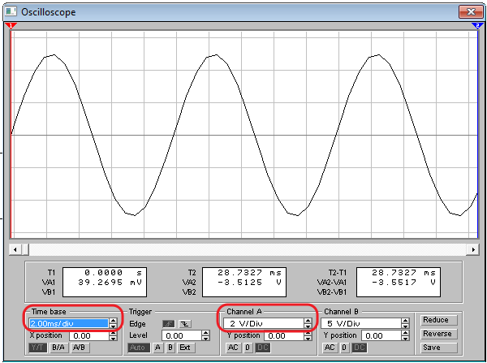
Рис. 4 - Синусоидальный сигнал на экрана осциллографа
- В рабочей тетради зарисуйте изображение синусоидального сигнала. Масштаб: 1 см в тетради равен 1 делению экрана осциллографа.
- Измерьте амплитуду сигнала:
- установите красный маркер на вершине "горба" сигнала (рис. 5);
- значение поля VA1 покажет значение амплитуды сигнала. Запишите это значение в рабочей тетради.
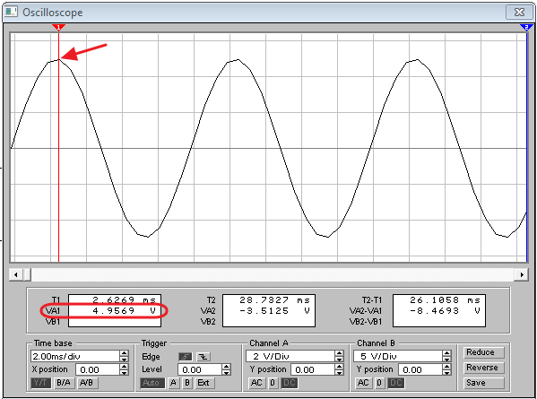
Рис. 5 - Измерение амалитуды синусоидального сигнала
- Измерьте период сигнала (рис. 6):
- установите красный маркер к точке сигнала в которой происходит переход от положительных значений к отрицательным значениям;
- установите синий маркер к следующей такой же точке сигнала. Чем ближе будут значения на полях VA1 и VA2, тем точнее будет результат измерения;
- значение поля Т2-Т1 покажет значение периода сигнала. Запишите это значение в рабочей тетради.
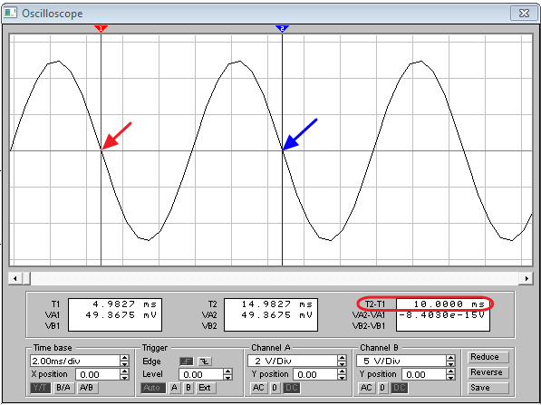
Рис. 6 - Измерение периода синусоидального сигнала
2. Исследование параметров прямоугольных импульсов
- Установите на генераторе частоту 1 кГц (Frequency 1 kHz) и амплитуду 2 В (Amplitude 2 V) сигнала прямоугольных импульсов (рис. 7).
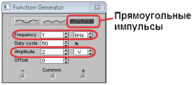
Рис. 7 - Настройки генератора для прямоугольных импульсов
- Включите схему на 2-3 секунды, щелкнув на кнопке Activate simulation.
- Выключите схему.
- На расширенной модели осциллографа (рис. 8). Установите шаг развертки 0,2 мс/дел (Time base - 0,2 ms/div) и чувствительность 1 В/дел (Channel A - 1 V/div) для получения четкого изображения сигнала.
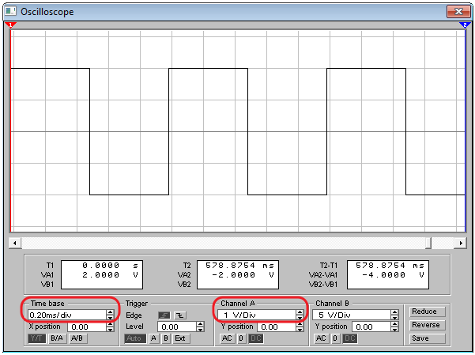
Рис. 8 - Синусоидальный сигнал на экрана осциллографа
- В рабочей тетради зарисуйте изображение прямоугольных импульсов. Масштаб: 1 см в тетради равен 1 делению экрана осциллографа.
- Измерьте длительность импульса, амплитуду и период сигнала.
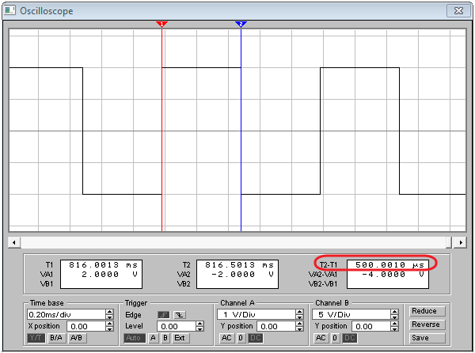
Рис. 9 - Измерение длительности прямоугольных импульсов
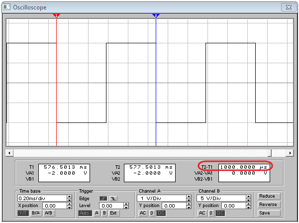
Рис. 10 - Измерение периода прямоугольных импульсов
- На генераторе установите скважность импульсов 25%.
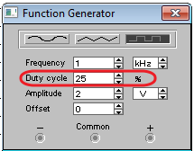
Рис. 11 - Установка скважности импульсов
- В рабочей тетради зарисуйте изображение прямоугольных импульсов. Масштаб: 1 см в тетради равен 1 делению экрана осциллографа.
- Измерьте длительность импульса, амплитуду и период сигнала.
- Проанализируйте полученные результаты и сделайте выводы.